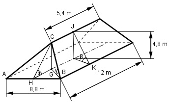

Aufgabe 90 Wie groß sind die Neigungswinkel α und β der Dachflächen des Walmdaches und der Neigungswinkel γ der Grate?

Im Dreieck HGC, rechter Winkel bei G: 12 m – 5,4 m HG = --------------- = 3,3 m 2 GC = h = 4,8 m 4,8 m tan α = --------- = 1,4545 --> α = 55,5° 3,3 m Im Dreieck IKJ, rechter Winkel bei I: IJ = H = 4,8 m IK = 8,8/2 m = 4,4 m 4,8 m tan γ = -------- = 1,0909 --> γ = 47,5° 4,4 m Im Dreieck HBG, rechter Winkel bei H: Satz von Pythagoras: HG = 3,3 m, HB = 8,8/2 m = 4,4 m BG2 = HG2 + HB2 = 3,32 m2 + 4,42 m2 = 30,25 m2 BG = √30,25 m2 = 5,5 m Im Dreieck GBC, rechter Winkel bei G: 4,8 m tan β = -------- = 0,8727 --> β = 41,1° 5,5 m